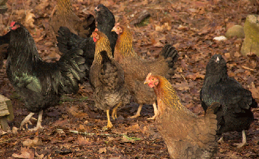
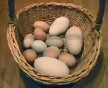
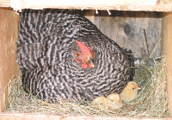
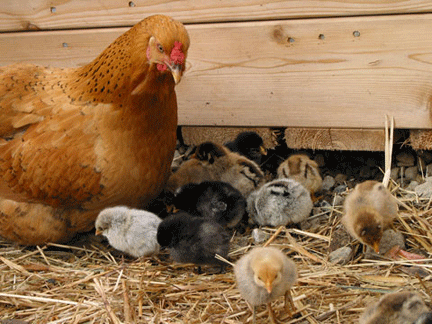
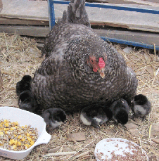
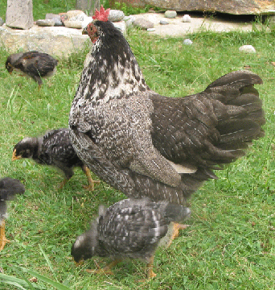
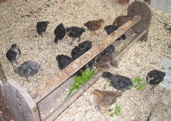
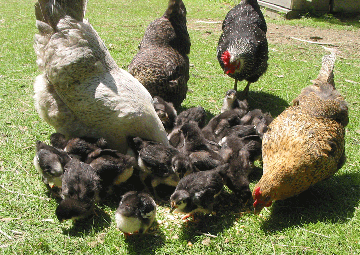
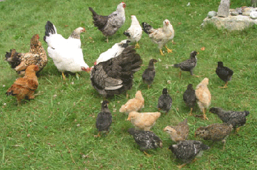

|  | ||||||||||||||||
| Chicks A wide variety of chicken breeds are available from small and large hatcheries. Other sources are poultry groups, local breeders or farms. |
||||||||||||||||
| The black chickens are Ameraucana which lay green eggs, and multi-colored chickens are Welsummer which lay dark red-brown eggs. They are good egg layers and also meat birds.
The large eggs are goose eggs. |
||||||||||||||||
|  | ||||||||||||||||
| After laying eggs for a while, hens go broody. They just want to sit in a nest box on a clutch of eggs and hatch them. Sometimes they find a secluded spot and sit for 21 days and then appear with their chicks. |  | |||||||||||||||
|  | ||||||||||||||||
| Hiding under the ramp to the sheep barn, this hen hatched her brood on the first day of spring. The temperature was 18°! The chicks were all walking around acting normal. When they needed to get warm they went under the hen or under her wings. I was amazed when I first saw this, as the information about raising day-old chicks from a hatchery said the temperature had to be 90°! Momma hens do a fantastic job raising their chicks. |
||||||||||||||||
|  |  | |||||||||||||||
| Ms. Blackie was my oldest hen... 13 years old! A mother to many chicks which she hatched or adopted as day-old chicks from the hatchery. |
||||||||||||||||
|  | ||||||||||||||||
| My feed for new chicks are small grains (millet, quinoa, amaranth) and seeds (flax, sesame, lightly ground sunflower), a little either hard boiled or scrambled egg, and grass or greens cut in small pieces. A small chick waterer with a screw on bottle makes it easy for chicks to drink. | ||||||||||||||||
|  |  | |||||||||||||||
| Hens are incredible mothers! I ordered 25 rooster chicks to use for meat. The day-old chicks arrived, and I had a very broody hen. So that night I took away her new eggs and put the 25 chicks under her. In the morning she was so excited to have her hatched brood of chicks. As the chicks grew larger, other hens joined the momma to help take care of them. |
If broody hens are managed to keep them separated in the hen house (in a wire dog cage), seen, but other hens do not have access to her nest to lay eggs and be disruptive, they are successful hatchers. They make the job of raising chicks really easy. I believe hen-raised chicks are stronger and healthier. | |||||||||||||||
| Chickens for Meat | ||||||||||||||||